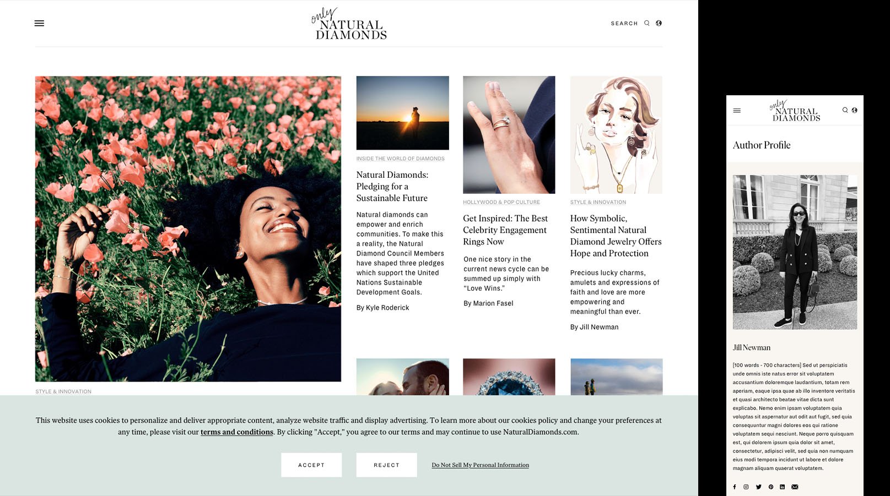

Tingyu Su is a designer and creative technologist who
believes design can make a difference.
Currently working at MoMA as a digital designer.
Previously a junior art director at Jane Smith Agency and the solo graphic designer at Parisa Wang New York.

Natural Diamond Council
Campaign Digital Design · Website Design

Parisa Wang New York
Brand Design · Digital Design · User Interface

Jane Smith Agency Website
Product Design · Digital Design

Solomon R. Guggenheim Museum
Motion Graphics · Prints

Rubin Museum of Art
Digital Design · Prints